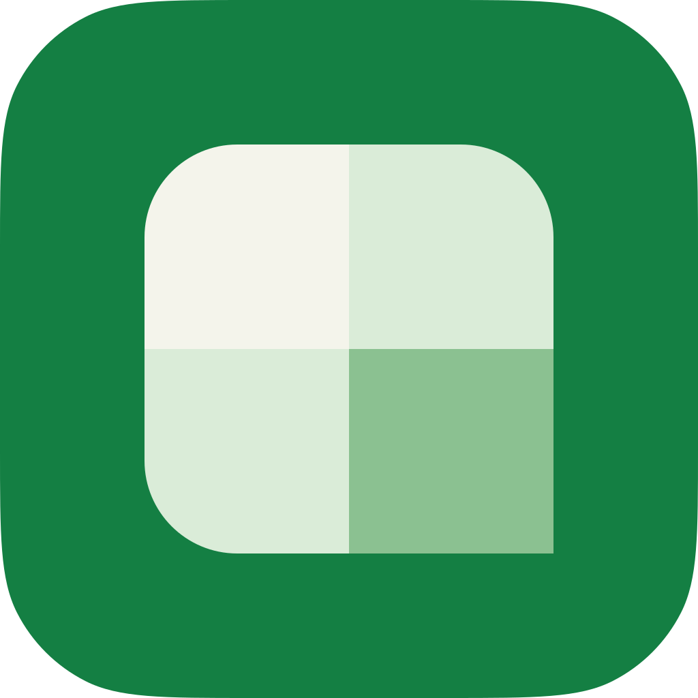

3 つの層
ブランドとアプリは目的が違います。LP は「読んでもらう」ために大きく流体的に、 アプリは「一日中使う」ために密に作ります。それでも同じ製品に見えるよう、 色・書体・形・動きの基盤は 1 つにまとめています。
共通基盤（この文書）
- 色のパレットとブランドの基準色
- 共通の意味色（light / dark）
- 書体・太さ・最小サイズ 12px
- 余白・角丸・線・動き・ブレークポイント
- アイコン（Lucide）・ロゴ・アプリアイコン
- WCAG 2.2 AA の基準
ブランド
- LP・ドキュメント・ストア掲載・SNS 画像
- 流体的な文字サイズ（本文 16〜18px）
- ページの幅と区切り、暗い帯
- ロゴの使い方、写真、文言、名前の扱い
- クラス接頭辞
rb-
アプリ
- アプリ UI のすべての画面
- hybrid テーマとキャンバス（シート）の色
- 密な文字サイズ（本文 14px、セル 12px）
- 密度・グリッド・重なり順・部品
- クラス接頭辞
rs-
判断の目安
- 両方で同じ意味なら共通基盤へ。緑が「操作・現在地」を意味するのは LP でもアプリでも同じなので、
--accentは共通です。 - 片方の読み方にしか合わないなら層へ。LP の 18px の本文はアプリには大きすぎ、アプリの 24px の行は LP には窮屈です。文字のスケールは層ごとに持ちます。
- 層は基盤を上書きしない。足すだけです。上書きが必要になったら、それは基盤の値が間違っている合図です。
色
OKLCH で設計し、sRGB の 16 進で納品します。中間色は暖色の Paper（紙）と寒色の Ink（記録）の二極で、
明るいテーマでは紙が面・インクが文字、暗いテーマではその関係が反転します。
緑の色相は明るいほど黄側へ寄る軌跡を持ち、ブランドの基準色 5 つ（下の表）がそのままスケール上に乗っています。
新しく足した段階（ink-150・ink-250・violet・teal）は、
明度と色相を保ったまま sRGB に収まるまで彩度だけを落としています。
ブランドの基準色
| トークン | 値 | 役割 |
|---|---|---|
--brand-green | #147F43 green.600 | Preserve — dominant brand colour, app-icon ground |
--brand-paper | #F4F4EB paper.50 | Paper — page and shell background in light |
--brand-mist | #DAECD8 green.100 | Mist — quiet structure |
--brand-leaf | #8BC191 green.300 | Leaf — accent on dark |
--brand-ink | #141A22 ink.900 | Ink — text, and the ground of dark surfaces |
パレット
#EEF9EC97.0% 0.021 140.9
#DAECD892.4% 0.033 142.5
#B3D5B383.9% 0.059 145.0
#8BC19176.0% 0.088 147.5
#5DA56C66.0% 0.112 149.3
#3D915658.9% 0.121 150.8
#147F4352.5% 0.130 152.3
#00633543.9% 0.110 154.4
#004A2936.0% 0.087 156.2
#002F1B26.9% 0.062 159.3
#FFFFFF100.0% 0.000 0.0
#F4F4EB96.5% 0.012 106.6
#EDEDE494.4% 0.012 106.6
#DDDDD489.5% 0.012 106.6
#CBCBC384.0% 0.011 106.6
#B2B2AA76.1% 0.011 106.7
#A7ADB574.5% 0.013 255.5
#999FA770.0% 0.014 255.5
#8D939B66.1% 0.014 255.5
#81878F62.1% 0.014 255.5
#6F757D56.0% 0.014 255.6
#5C636D49.7% 0.018 257.2
#474E5742.1% 0.018 254.7
#32394134.1% 0.017 251.8
#23293227.9% 0.019 258.4
#1B212924.5% 0.018 255.7
#141A2221.5% 0.018 255.7
#0B111817.5% 0.017 252.6
#04080E13.2% 0.016 251.8
#F6E5CE92.9% 0.036 75.5
#D6B89079.9% 0.064 74.6
#B9905667.9% 0.090 74.9
#A6762A60.1% 0.108 75.0
#86590050.1% 0.106 74.9
#472D0032.1% 0.068 74.7
#FFDDD992.5% 0.038 25.8
#E49C9376.1% 0.088 27.2
#C5675D62.1% 0.122 27.4
#B44B4354.9% 0.138 26.9
#9E232146.0% 0.160 26.9
#5D000430.1% 0.123 27.3
#D8EAFF93.0% 0.034 252.3
#95BBE778.0% 0.075 252.4
#4F89C961.9% 0.115 252.2
#2D74BC55.1% 0.132 251.8
#0059A146.1% 0.137 251.7
#002E5930.0% 0.090 252.2
#EBE3FC93.0% 0.035 300.3
#BFABE677.9% 0.085 300.0
#9372C862.0% 0.130 300.3
#8059BB55.0% 0.150 299.9
#673E9E46.1% 0.151 300.2
#361E5729.9% 0.099 299.8
#CFEFEF92.9% 0.033 196.6
#7BC7C678.0% 0.076 194.6
#33979762.0% 0.090 195.1
#13828255.1% 0.090 194.9
#00666646.2% 0.079 194.8
#00363630.1% 0.051 194.8
共通の意味色
ブランドとアプリの両方がこの名前で色を使います。アプリの hybrid テーマはこの dark を枠に、キャンバスに light を使います。
LP の暗い帯は、その区間だけに data-theme="dark" を付けます。
| トークン | light | dark | 用途 |
|---|---|---|---|
--bg-page | paper.50 | ink.900 | Page / app background |
--bg-surface | paper.0 | ink.800 | Bars, cards, docked panels, fields |
--bg-raised | paper.0 | ink.700 | Menus, popovers, dialogs — anything floating |
--bg-sunken | paper.100 | ink.950 | Wells, inset areas, progress track |
--bg-feature | green.100 | green.900 | Landing site: the one Mist panel behind the first view |
--bg-hover | paper.100 | ink.600 | Hover fill of items and ghost buttons |
--bg-pressed | paper.200 | ink.500 | Pressed fill of the same |
--border-default | paper.200 | ink.600 | Separators and non-interactive edges |
--border-strong | paper.300 | ink.500 | Edges that must read over a busy surface |
--border-control | ink.300 | ink.350 | Outline of an interactive control (3:1) |
--fg-default | ink.900 | paper.50 | Primary text |
--fg-muted | ink.500 | ink.150 | Secondary text: helper, metadata, shortcut hints |
--fg-subtle | ink.400 | ink.250 | Placeholders only |
--accent | green.600 | green.300 | Primary action fill, active indicator, checked control |
--accent-hover | green.700 | green.200 | |
--accent-active | green.800 | green.100 | |
--accent-contrast | paper.0 | ink.900 | Text/icon on an accent fill |
--accent-subtle | green.50 | green.900 | Selected item fill |
--accent-subtle-text | green.800 | green.200 | Text on accent-subtle |
--accent-text | green.700 | green.300 | Accent-coloured text and icons |
--focus-ring | green.600 | green.300 | Keyboard focus outline |
--danger | red.600 | red.300 | Destructive action fill, error icon |
--danger-hover | red.700 | red.100 | |
--danger-contrast | paper.0 | ink.900 | Text on a danger fill |
--danger-text | red.700 | red.300 | Error message text |
--danger-subtle | red.100 | red.900 | Error banner fill |
--warning | amber.600 | amber.300 | Warning icon and stripe |
--warning-text | amber.700 | amber.300 | Warning message text |
--warning-subtle | amber.100 | amber.900 | Warning banner fill |
--success | green.600 | green.300 | Success icon |
--success-text | green.700 | green.300 | Success message text |
--success-subtle | green.100 | green.900 | Success banner fill |
--info | blue.600 | blue.300 | Information icon and stripe |
--info-text | blue.700 | blue.300 | Information message text |
--info-subtle | blue.100 | blue.900 | Information banner fill |
--link | green.700 | green.300 | |
--link-visited | green.900 | green.200 | |
--inverse-bg | ink.800 | paper.100 | Tooltips and toasts: the opposite of the theme |
--inverse-text | paper.50 | ink.900 | |
--inverse-text-muted | ink.200 | ink.500 | |
--overlay | ink.1000 / 0.45 | ink.1000 / 0.65 | Scrim behind a modal |
段階と役割の対応
意味色は、パレットの段階を役割ごとに同じ規則で選びます。4 つの状態（danger・warning・info・success）は、 どれも「印（アイコン・帯・塗り）」「文字」「淡い面」の 3 つをそろえて持ちます。
| 役割 | light | dark | 例 |
|---|---|---|---|
| 印・塗り | 600 | 300 | --accent --danger --info --success |
| 文字 | 700 | 300 | --accent-text --danger-text --info-text --success-text |
| 淡い面 | 100 | 900 | --danger-subtle --info-subtle --success-subtle |
| ホバー・押下 | 1 段・2 段濃く | 1 段・2 段明るく | --accent-hover --accent-active --danger-hover |
例外は 1 つです。選択の面（--accent-subtle）は green.50：一覧で面積が大きいため、状態の淡い面（100）より一段淡くします。
状態の色相（amber・red・blue・violet・teal）は 100 と 900 の明度がそろっています（約 93% と約 30%）。中間の段階は amber だけが約 5% 明るいものの、
600 の印（白地で 4.0:1）と 700 の文字（淡い面の上で 4.9:1）はどちらも基準を満たすので、例外を作らず同じ番号を使います。
キャンバスの印（参照色・検索の現在の一致・編集済みの変更バー）も同じ規則で 600 です。
success）も同じ緑ですが、
必ずアイコンか文言を添えます。文字
Web フォントは LP でもアプリでも読み込みません。Windows 11 に標準搭載の BIZ UD ゴシックを基準に、 macOS / iOS はヒラギノ、Android / Linux は Noto にフォールバックします。 ダウンロードも表示の揺れ（FOUT・CLS）もなく、オフラインでも同じ見た目になります。
| トークン | 用途 | スタック |
|---|---|---|
--font-ui | アプリの UI、LP の本文と見出し | "BIZ UDPGothic", "Yu Gothic UI", "Meiryo UI", "Meiryo", "Yu Gothic", "MS UI Gothic", "Hiragino Sans", "Hiragino Kaku Gothic ProN", "Noto Sans JP", "Noto Sans CJK JP", sans-serif |
--font-data | セル・数値・パス（アプリの既定のスプレッドシートのフォント） | "BIZ UDGothic", "BIZ UDゴシック", "MS Gothic", "ＭＳ ゴシック", "Meiryo", "Yu Gothic", "Hiragino Sans", "Hiragino Kaku Gothic ProN", "Noto Sans JP", "Noto Sans CJK JP", sans-serif |
--font-code | コード・JSON と YAML のエディタ・ショートカット表記・LP の見出し上の英字ラベル | "BIZ UDGothic", "Consolas", "SFMono-Regular", "Menlo", monospace |
- 太さは 400 と 700 だけ。BIZ UD に 500・600・800 はなく、指定すると 400 か 700 に落ちます。LP の見出しも 700 です。
- 最小は 12px（
--text-min）。日本語も英数字も同じ下限です。 - 日本語の字間は詰めない。負のトラッキングは英語の見出し（
:lang(en)）だけに使います。 - 大文字の英字ラベルにだけ
--tracking-caps（0.08em）を使います。日本語には使いません。 - ロゴタイプの Inter は図形です。ロゴタイプは Inter の Bold 700 と Medium 500 をアウトライン化したもので、UI や LP のテキストに Inter を使う根拠にはなりません。
- 桁揃えは書体で行う。BIZ UD に
tnumはありません。BIZ UDGothic は英数が半角固定なので数値列が揃います。スラッシュ付きゼロ（zero）は常時有効です。 - 文字サイズのスケールは層ごとに持ちます（ブランド：流体 12〜52px、アプリ：12 / 14 / 16 / 20px）。
余白・形・線・動き
余白は 4px を基準に、密な UI のための 2px と 6px を足しています。LP の大きな区切りのために 80px・96px まであります。
形は「外側はやわらかく、データは直角」。アプリのセルだけが角 0（--radius-cell、アプリ層）です。
入れ子の角は同心にします（外側の半径 ＝ 内側の半径 ＋ 間の余白）。
余白
| トークン | 値 | 用途 |
|---|---|---|
--space-0 | 0px | |
--space-0-5 | 2px | |
--space-1 | 4px | |
--space-1-5 | 6px | |
--space-2 | 8px | |
--space-3 | 12px | |
--space-4 | 16px | |
--space-5 | 20px | |
--space-6 | 24px | |
--space-8 | 32px | |
--space-10 | 40px | |
--space-12 | 48px | |
--space-16 | 64px | |
--space-20 | 80px | |
--space-24 | 96px |
角丸
| トークン | 値 | 用途 |
|---|---|---|
--radius-xs | 2px | Marks and chips inside dense UI |
--radius-sm | 4px | Menu items, inline controls up to 28px, tabs |
--radius-md | 6px | Buttons and fields |
--radius-lg | 8px | Menus, popovers, cards in the app (= sm + 4px inset) |
--radius-xl | 12px | Dialogs, toasts; cards on the landing site |
--radius-2xl | 16px | Screenshot frames and hero media on the landing site |
--radius-full | 999px | Pills, status dots |
線
| トークン | 値 | 用途 |
|---|---|---|
--stroke-thin | 1px | Separators, fields, cards, grid lines |
--stroke-medium | 2px | Active cell, selected-tab indicator, focus ring |
--stroke-thick | 4px | Banner stripe |
ターゲットの大きさ
| トークン | 値 | 用途 |
|---|---|---|
--target-min | 24px | WCAG 2.5.8 minimum, every pointer |
--target-touch | 44px | Touch: actions, menu items, fields, dialog buttons |
--target-touch-dense | 40px | Touch: items in a strip of many (tabs, status-bar items) |
アイコン
| トークン | 値 | 用途 |
|---|---|---|
--icon-sm | 16px | Menus, bars, buttons (default) |
--icon-md | 20px | Coarse pointer, landing-site feature lists |
--icon-lg | 24px | Welcome screen, landing-site feature cards |
動き
| トークン | 値 | 用途 |
|---|---|---|
--duration-instant | 80ms | Press feedback |
--duration-fast | 120ms | Hover, colour changes |
--duration-base | 200ms | Open/close of menus, popovers, panels |
--duration-slow | 320ms | Drawers and bottom sheets |
ブレークポイント
| トークン | 値 | 用途 |
|---|---|---|
--bp-sm | 32.5em | 520px — at or below: the narrowest phone adjustments |
--bp-md | 43.75em | 700px — at or below: the phone layout (app); landing-site stat rows stack |
--bp-lg | 56.25em | 900px — at or below: landing-site columns stack, header links fold |
--bp-xl | 90em | 1440px — reserved; nothing switches here yet |
- 動くのは開閉とフィードバックだけ。LP のボタンも持ち上げません（動かないものを動かさない）。
prefers-reduced-motionでは遷移を止めます。- メディアクエリは em で書きます。既定の文字サイズを大きくしている人には、その実効幅に合ったレイアウトが出ます。
- ブレークポイントは端末の種類ではなく、中身が崩れる幅です。値はアプリと LP が実際に切り替える幅で、
「以下」を
max-widthで書きます（例：(max-width: 43.75em)がアプリのスマートフォン配置）。 新しい幅が必要になったら、先にこの表に足します。
アイコンとロゴ
アイコン
- ライブラリは Lucide（ISC）だけ。混在させません。
- 24 単位のグリッドを 16 / 20 / 24px で描き、描画上の線幅は大きさによらず 1.5px（
vector-effect: non-scaling-stroke）。端と接合は round。 - 色は
currentColor。塗りはステータスの点など、小さく確実に読ませたいものだけ。 - 解決済みの概念に独自の絵を作らない（設定＝歯車、検索＝虫眼鏡、削除＝ごみ箱）。アイコンだけのボタンには必ずラベルを付けます。
ロゴとアプリアイコン

ファイルは foundations/logo/ と foundations/icons/ にあり、LP とアプリの両方がここから取り込みます。
使い方（余白・最小サイズ・背景ごとの版・禁止事項）は ブランドガイドライン、
寸法と字詰めの詳細は foundations/logo/SPEC.md にあります。
アクセシビリティ
WCAG 2.2 レベル AA が、LP とアプリの共通の出荷条件です。文字 4.5:1、UI 部品と状態の印 3:1。 下の監査は共通の意味色だけを対象にしています。キャンバスの色（アプリ）と LP 固有の組み合わせは、それぞれの文書で監査します。 APCA（WCAG 3 の候補）は未確定のため、判定には使っていません。
| 用途 | 前景 / 背景 | 下限 | light | dark |
|---|---|---|---|---|
| Body text on the page | fg-default / bg-page | 4.5 | 15.81 | 15.81 |
| Body text on bars and cards | fg-default / bg-surface | 4.5 | 17.49 | 14.65 |
| Body text in menus and dialogs | fg-default / bg-raised | 4.5 | 17.49 | 13.23 |
| Text on a hovered item | fg-default / bg-hover | 4.5 | 14.85 | 10.56 |
| Text on a pressed item | fg-default / bg-pressed | 4.5 | 12.80 | 7.61 |
| Secondary text on the page | fg-muted / bg-page | 4.5 | 7.61 | 7.74 |
| Secondary text on bars and cards | fg-muted / bg-surface | 4.5 | 8.42 | 7.17 |
| Secondary text in menus | fg-muted / bg-raised | 4.5 | 8.42 | 6.47 |
| Shortcut hint on a hovered item | fg-muted / bg-hover | 4.5 | 7.15 | 5.17 |
| Placeholder in a field | fg-subtle / bg-surface | 4.5 | 6.07 | 5.23 |
| Placeholder in a dialog field | fg-subtle / bg-raised | 4.5 | 6.07 | 4.73 |
| Primary button label | accent-contrast / accent | 4.5 | 5.06 | 8.44 |
| Primary button label, hovered | accent-contrast / accent-hover | 4.5 | 7.40 | 10.90 |
| Accent text | accent-text / bg-page | 4.5 | 6.69 | 8.44 |
| Accent text on bars and cards | accent-text / bg-surface | 4.5 | 7.40 | 7.82 |
| Accent text in menus | accent-text / bg-raised | 4.5 | 7.40 | 7.06 |
| Selected item text | accent-subtle-text / accent-subtle | 4.5 | 9.64 | 9.20 |
| Destructive button label | danger-contrast / danger | 4.5 | 5.21 | 7.89 |
| Error message | danger-text / bg-page | 4.5 | 6.99 | 7.89 |
| Error message on a bar | danger-text / bg-surface | 4.5 | 7.73 | 7.31 |
| Error message in a dialog | danger-text / bg-raised | 4.5 | 7.73 | 6.60 |
| Error banner text | danger-text / danger-subtle | 4.5 | 6.11 | 6.46 |
| Warning message | warning-text / bg-page | 4.5 | 5.52 | 9.26 |
| Warning banner text | warning-text / warning-subtle | 4.5 | 4.94 | 6.77 |
| Body text in a warning banner | fg-default / warning-subtle | 4.5 | 14.17 | 11.55 |
| Success message | success-text / bg-page | 4.5 | 6.69 | 8.44 |
| Success message in a dialog | success-text / bg-raised | 4.5 | 7.40 | 7.06 |
| Success banner text | success-text / success-subtle | 4.5 | 5.98 | 7.12 |
| Information message | info-text / bg-page | 4.5 | 6.45 | 8.78 |
| Information banner text | info-text / info-subtle | 4.5 | 5.82 | 6.87 |
| Link | link / bg-page | 4.5 | 6.69 | 8.44 |
| Link in a dialog | link / bg-raised | 4.5 | 7.40 | 7.06 |
| Visited link | link-visited / bg-page | 4.5 | 13.35 | 10.90 |
| Tooltip / toast text | inverse-text / inverse-bg | 4.5 | 14.65 | 14.85 |
| Tooltip shortcut hint | inverse-text-muted / inverse-bg | 4.5 | 6.07 | 7.15 |
| Field outline | border-control / bg-page | 3 | 3.28 | 3.76 |
| Field outline on a bar or card | border-control / bg-surface | 3 | 3.62 | 3.48 |
| Field outline in a dialog | border-control / bg-raised | 3 | 3.62 | 3.15 |
| Accent fill / indicator | accent / bg-page | 3 | 4.58 | 8.44 |
| Selected-tab indicator on a bar | accent / bg-surface | 3 | 5.06 | 7.82 |
| Focus ring on a bar or card | focus-ring / bg-surface | 3 | 5.06 | 7.82 |
| Focus ring in a dialog | focus-ring / bg-raised | 3 | 5.06 | 7.06 |
| Error icon | danger / bg-page | 3 | 4.71 | 7.89 |
| Warning icon | warning / bg-page | 3 | 3.62 | 9.26 |
| Warning stripe on its banner | warning / warning-subtle | 3 | 3.24 | 6.77 |
| Info icon | info / bg-page | 3 | 4.38 | 8.78 |
| Success icon | success / bg-page | 3 | 4.58 | 8.44 |
- フォーカスリングは 2px（
--focus-width）で、消しません。 - 操作対象は 24×24px 以上（
--target-min、WCAG 2.5.8）。タッチ（pointer: coarseと、各製品のスマートフォン配置）では、 操作・メニュー項目・入力欄が 44px（--target-touch）、タブや状態バーの項目のように多数が一列に並ぶものが 40px（--target-touch-dense）以上。 大きさをそろえるために、既存の操作対象を小さくはしません。 - 色だけで情報を伝えません。